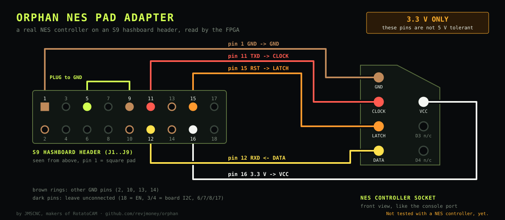

Real NES pads
Plug an original NES controller into the S9 control board and play the Orphan NES console with it. The FPGA reads the pad's own shift register about 1000 times a second, with NES timing. Real pads and the browser pads (keyboard, USB gamepad) work together.
Not tested with a NES controller, yet · built and simulatedDisconnect every hashboard first
Unplug all hashboards from J1..J9 before you plug in a pad or load the NES core. Any header can be a pad port, and the FPGA drives the LATCH and CLOCK pins of the headers you pick.

What you need
- An S9 control board running Orphan, with the
orphan_nescore - An original NES controller. Its CD4021 is a CMOS chip that should run at 3.3 V (not yet checked against the datasheet or on a real pad); some clone pads use other chips and may not run at 3.3 V.
- A 2x9 socket that fits the header on your board (check the pitch with calipers: 2.54 mm or 2.0 mm)
- An NES controller socket: the easiest is the socket end of an NES extension cable
- A multimeter (continuity and DC volts) and a soldering iron
Wiring
| S9 header pin | On the S9 board | NES socket | Official pad wire |
|---|---|---|---|
| 15 | RST (FPGA output) | LATCH (OUT) | orange |
| 11 | TXD (FPGA output) | CLOCK (CLK) | red |
| 12 | RXD (FPGA input) | DATA (D0) | yellow |
| 16 | 3.3 V | VCC (the "+5V" pin) | white |
| 1 (or 2, 9, 10, 13, 14) | GND | GND | brown |
| 5 | PLUG | tie to GND (pin 9) in the adapter | jumper |
Leave every other header pin unconnected: 18 is EN (driven by the ARM), 3 and 4 are the board's I2C bus, 6, 7, 8 and 17 are not used by Orphan. D3 and D4 on the NES socket stay unconnected.
PLUG to GND matters: it tells Orphan an adapter is on this header. The FPGA only drives LATCH and CLOCK on a header you picked and whose PLUG pin is low. Without the jumper the pad is never read.
The wire colours are those of an official NES pad cable. Extension cables and clones use other colours: find each wire with the continuity tester, against the socket drawing (front view, like the console's own port).
Before you plug a pad in
- Check the header numbering under load. The drawing uses the usual 2x9 numbering: pin 1 is the square pad, odd pins in one row, even pins in the other. With the board powered, put a 1 k resistor from pin 16 to pin 1 and measure across it: it must stay at 3.3 V. A plain voltage check is not enough: while an Orphan design with pull-ups is loaded the signal pins also read about 3.3 V, but a weak pull-up drops to almost 0 V under 1 k. If it does not hold, stop and find the 3.3 V and GND pins on your board first.
- Unplug every hashboard. All of J1..J9 are available for pads, so no hashboard may be on the board while the NES core
runs. Stock boards only have headers fitted on J6, J7 and J8; J1 to J5 and J9 are bare footprints you can solder a header
into (do the pin 16 check there too). Optional extra safety:
ORPHAN_NES_PADS_NEVER=6,7(or6,7in/etc/orphan/nespads-never) lists headers that are never driven or read. - Empty-header test (required on J6 to J8). With no pad plugged in, start the console with your two headers picked and
check that it prints
no adapterfor both pads. No board pull-ups were found on these pins (measured on J1, J2 and J4 to J7 of one board), but J6 to J8 have resistors fitted nearby that are not measured yet: a pull-down on PLUG would show up here as "adapter found" with nothing plugged in.
Turn it on
The console reads pads on J1 (pad 1) and J2 (pad 2) unless told otherwise. Pick other headers on the board:
ORPHAN_NES_PADS=7,8 # pad 1 on J7, pad 2 on J8 echo 7,8 > /etc/orphan/nespads ORPHAN_NES_PADS=off # real pads off ORPHAN_NES_PADS_NEVER=6,7 # optional: never drive or read J6 and J7 (default: none)
At start the console prints, for example, Real NES pads on J7,J8: pad 1 adapter found, pad 2 no adapter.
Its web page (port 8000) has an NES pads button: each pad's header, whether an adapter is found, and every button
lighting up as you press it.
How it works
- The reader (orphan_nespad.v): LATCH high for 12 us, then 8 bits with 6 us clock halves (A, B, Select, Start, Up, Down, Left, Right; low = pressed), a scan every 1.002 ms. A read no real pad can give (Up + Down or Left + Right at once) counts as no buttons, so a stuck DATA line can not jam a game.
- Any header: a 9-header crossbar in the FPGA, so J1 to J9 can each be pad 1 or pad 2. A header is driven only while it is picked, its own PLUG pin reads low, and it is not protected. The FPGA's weak pull-ups are on for all 36 header pins.
- Registers: HWPADS (word 9 of the NES block): write enable and the two header numbers, read the buttons and which pads are being read. HWNEVER (word 11): optional protected headers, none after the FPGA loads. Real pads stay off after the FPGA loads until the console program turns them on, and go off again when it exits.
- Tested in simulation: the reader against a model of the pad's 4021 (15 checks) and the header crossbar (13 checks: switching headers mid-scan, PLUG high, a protected header with PLUG low). Not tested with a NES controller, yet, and not yet on a board: reports welcome as GitHub issues.
Pad facts (button order, latch and clock behaviour, wire colours, socket layout) are from the NESdev wiki: Standard controller and Controller port pinout.